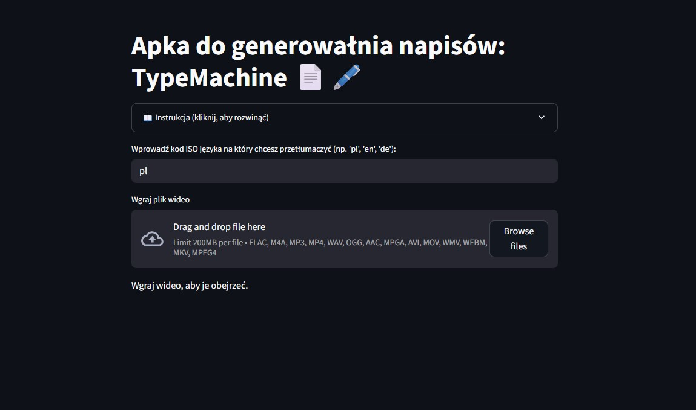
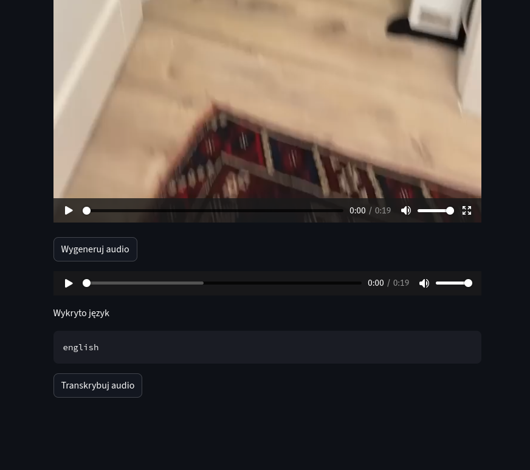
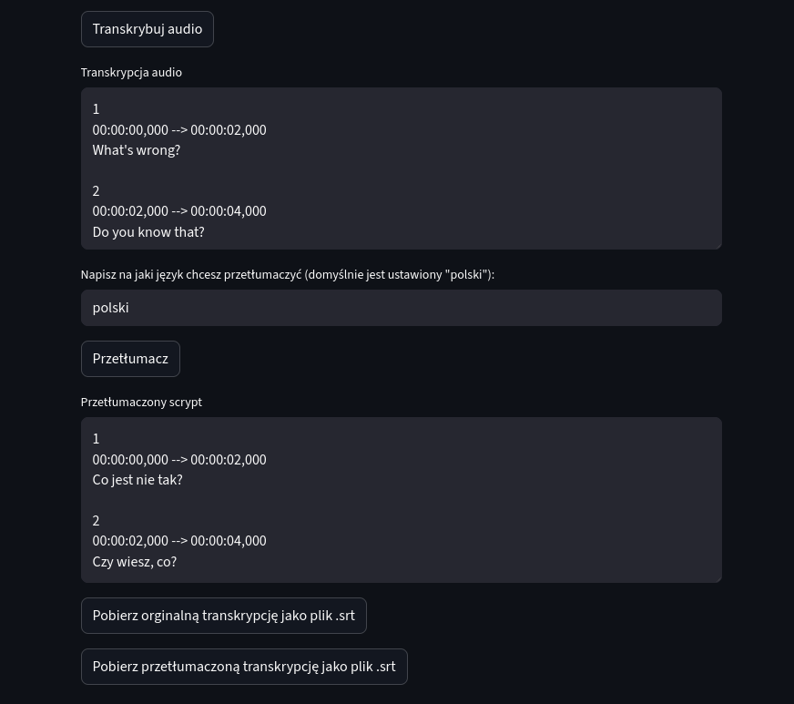

Simple app for generating texts: TypeMachine 📄🖋️
Description
Typemachine is a Streamlit-based application for generating subtitles from short video files.
The app extracts audio from a video, transcribes speech to text using OpenAI, allows basic text editing, translates the transcript into a selected language, and exports subtitles in SRT format.
Due to technological limitations, the size of the processed video is limited to 200MB.
✨ Features
- Upload short video files
- Extract audio using ffmpeg
- Speech-to-text transcription (OpenAI)
- Editable transcript
- Translation into a target language
- Export original and translated subtitles as .srt
Quick start
🚀 Installation & Setup 1️⃣ Clone the repository git clone https://github.com/your-username/typemachine.git cd typemachine
Switch to branch v2-lang-modules: git checkout v2-lang-modules
2️⃣ Create Conda environment (Make sure you have Conda installed (Anaconda or Miniconda)).
conda env create -f environment.yml
Activate the environment:
conda activate typemachine
3️⃣ Environment variables
Create a .env file in the project root directory:
OPENAI_API_KEY=your_openai_api_key_here
If not type the openai key in start of applicatin
4️⃣ Run the application streamlit run app/main.py
The application will be available at:
http://localhost:8501
Instructions of use:
After entering your OpenAI key, you (the user) can:
- In the "Upload Video" field, upload the video from which you want to extract text.
- Then press the "Generate Audio" button and check if the audio was generated correctly.
- Next, press the "Audio Transcription" button — the text from the uploaded video will appear.
- You can modify it, but remember to press CTRL + ENTER to confirm your changes.
- Enter the language you want to translate the script into (by default, it will be Polish).
- Press the "Translate" button to generate a translation in SRT file format.
- The translated text can also be modified and confirmed with CTRL + ENTER.
- You can download both the translated version and the original.
🔄 Application Flow
A[Upload Video] --> B[Extract Audio (ffmpeg)]
B --> C[Generate Audio File]
C --> D[Audio Transcription (OpenAI)]
D --> E[Editable Transcript]
E --> F[Translation]
F --> G[Editable Tranlated Transcript]
G --> H[SRT File Output]
quick-spec:
Python 3.11.11
Name Version Build Channel
- streamlit 1.42.0 py311haa95532_0
- streamlit-audiorecorder 0.0.6 pypi_0 pypi
- pydub 0.25.1 pyhd8ed1ab_1 conda-forge
- python-dotenv 0.21.0 py311haa95532_0
- openai 2.14.0 pyhd8ed1ab_0 conda-forge
- ffmpeg 6.1.1 hc79a5da_2
- ffmpeg-python 0.2.0 pypi_0 pypi
Also in use:
io, BytesIO, hashlib, md5 os
Project Structure
=================
app/
│
├── ai/
│ └── transcrible.py --> all function needed for recognition the langue of text, transcrible and translate of text
│
├── audio/
│ └── extract.py --> function needed for extract mp3 format from Video
│
├── config/
│ └── settings.py --> hardcode the AI model used in project
│
└── main.py --> main code of the app.
Mini spec:
- Python 3.11.11
- streamlit 1.42.0 py311haa95532_0
- streamlit-audiorecorder 0.0.6 pypi_0
- pypi pydub 0.25.1 pyhd8ed1ab_1 conda-forge
- python-dotenv 0.21.0 py311haa95532_0
- openai 1.47.0 pyhd8ed1ab_0 conda-forge
- ffmpeg 6.1.1 hc79a5da_2
- ffmpeg-python 0.2.0 pypi_0 pypi
Appearance of the application
  